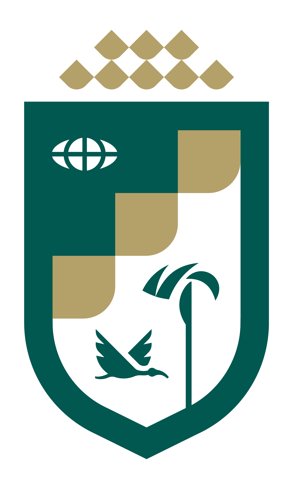

1er Seminario de Inteligencia Artificial Unitrópico
Expositores y Agenda
| Hora | Conferencista | Nombre de la conferencia |
|---|
Agenda del lunes 06 de octubre de 2025 — Auditorio Fundadores, Unitrópico.
| Hora | Conferencista | Nombre de la conferencia |
|---|
Agenda del lunes 06 de octubre de 2025 — Auditorio Fundadores, Unitrópico.